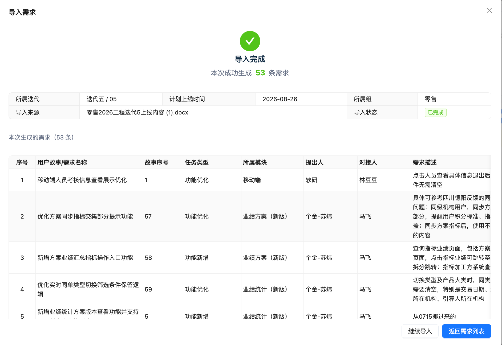
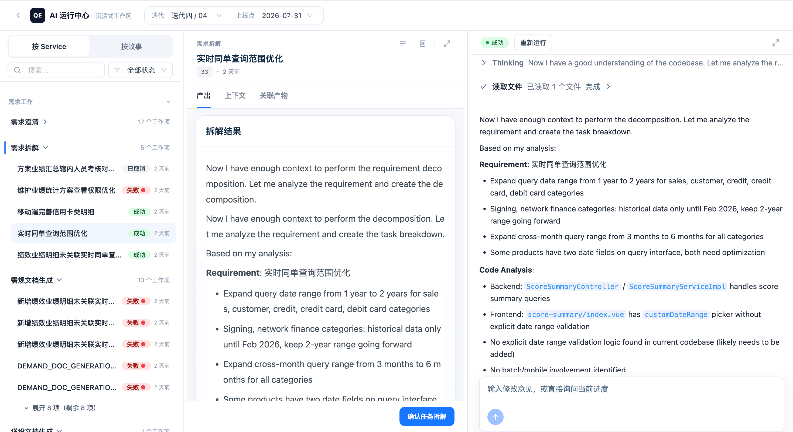
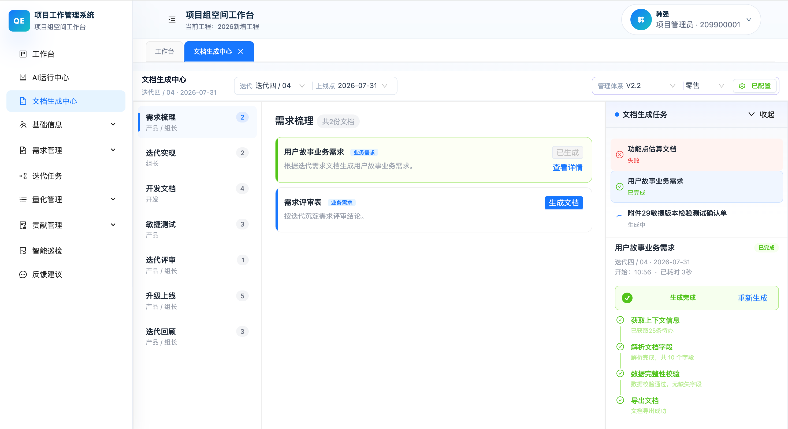

AI Agent 驱动
项目全生命周期管理
看 AI 如何贯穿从需求到复盘的每一个环节,把过程沉淀为持续增强的研发资产。
一条需求的飞轮闭环
Agent 从需求分析出发,陪伴需求走完 AI 敏捷流程迭代,最终完成知识沉淀,形成持续增强的研发知识飞轮。
AI 在每一步的具体参与
点击左侧流程节点,或使用上下步按钮,逐层查看这条需求如何走完十个关键环节。
需求录入
需求是业务诉求的统一入口,记录原始描述与上下文。本例中「需求导入解析太慢,需要改造成异步任务」被录入系统,随后触发「需求澄清」——从这里开始,AI 围绕这条需求持续参与。

需求分析 · 需求澄清需求澄清已落地
AI 读取需求原始描述与上下文,识别不明确、易歧义、有风险的点,产出可确认的澄清问题与结构化改写建议。
- 需求原始描述
- 故事 / 模块上下文
- 定位不明确点
- 生成澄清问题清单
- 识别风险项
- AI 优化后的需求描述
- 待确认问题 + 风险列表
- WAITING 补充信息
- 「确认应用」定稿

人工确认
AI 出建议但不能替代责任人。关键动作——「确认应用」「确认任务拆解」「确认分工」——必须人工点击,并记录确认人与时间。确认不是不信任 AI,而是把决策权与管理责任留在人手里。在本案例中,人工补充了 2 个工程约束后,澄清环节即完成。
需求拆解需求拆解已落地
AI 把澄清后的需求拆解为一组可执行待办草案,并为每条标注所属模块、改动范围、复杂度与工作量,形成分配前的结构化基础。
- 澄清后需求
- 故事描述 + 代码上下文
- 拆分可执行待办
- 判定模块归属
- 评估改动范围/工作量
- 待办草案 todo-list
- 模块 / 复杂度 / 实现偏向
- 逐条调整待办
- 「确认任务拆解」

任务分配 · 智能任务分工智能任务分工工作台工作台承载
拆解产出的待办进入「智能任务分工工作台」。AI 结合当前迭代工作量、组员 Markdown 能力档案与组长分工策略,为每条待办给出建议负责人 + 理由 + 置信度 + 工作量前后对比,组长确认后正式落到负责人。
- 待办 + 复杂度/模块
- 成员能力档案
- 组长分工策略
- 逐条给建议负责人
- 引用任务特征 + 能力依据说明理由
- 算分配前后工作量变化
- 分工方案 + 理由/置信度
- 风险标记 riskFlags
- 逐条 / 批量确认
- 写入负责人 · 记录确认人

开发
开发阶段 AI 当前主要通过拆解和分工间接参与,确保每一条待办都有明确的模块归属与实现偏向。UCode 编码辅助与 AI 代码评审在后续规划中。
测试
AI 已落地测试用例文档生成,基于需求与模块自动产出单元 / 集成测试用例。本案例中 Agent 识别了成功 / 失败 / 刷新 / 重复提交 / 重解析五种测试场景。缺陷记录回流至过程级资产,成为后续判断依据。

文档
文档阶段覆盖需求评审表、需规、详设、测试用例、上线评审纪要等 16 类已落地文档,按 7 个迭代阶段自动生成。模板类文档走路径 B(后端直连),需规与测试文档走路径 A(Runner 异步批量)。

上线
AI 辅助产出投产风险评估表、生产健康检查表、扫雷检查单等上线文档,帮助识别变更风险与遗漏项。本案例涉及前端状态机改造、后端任务实体新增,AI 评估了数据库变更与接口兼容性风险。
复盘
AI 自动生成回顾会纪要与改进计划初稿;复盘结论回流为过程级资产,反哺下一轮需求理解与拆解。迭代结束后,团队可基于 AI 产出的纪要快速对齐改进方向。
资产沉淀
AI 的每次产出——澄清问题、确认记录、拆解偏差、评审意见、上线问题——都被记录并回流。资产越完整,AI 判断越有依据;AI 参与越深,资产沉淀越快。这是整个系统持续增强的基础,也是「围绕项目管理体系运行」的最终落点。